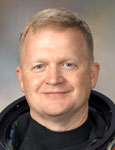

Lyndon B. Johnson Space Center
Houston, Texas 77058
|
National Aeronautics
and Space Administration Lyndon B. Johnson Space Center Houston, Texas 77058 |
 |
Biographical Data |
||
Eric A. Boe (Colonel, USAF)
NASA Astronaut
PERSONAL DATA: Born October 1, 1964, in Miami, Florida. He grew up in Atlanta, Georgia. Married to the former Kristen Newman of Thousand Oaks, California. They have two children. He enjoys outdoor sports, reading, scuba diving, and skiing.
EDUCATION: Graduated from Henderson High School, Chamblee, Georgia, 1983. Bachelor of Science in Astronautical Engineering, United States Air Force Academy, 1987. Master of Science in Electrical Engineering, Georgia Institute of Technology, 1997.
ORGANIZATIONS: Member of the Society of Experimental Test Pilots and Civil Air Patrol.
SPECIAL HONORS: Distinguished Graduate with honors from the United States Air Force Academy, 1987. Awarded the Fannie and John Hertz Foundation Fellowship for graduate studies, 1987. Military decorations include the Defense Meritorious Service Medal, Meritorious Service Medal (2), Air Medal (2), Aerial Achievement Medal (5), the Commendation Medal (3), Achievement Medal, Outstanding Unit Award (3), Combat Readiness Medal, and various other service awards.
EXPERIENCE: Boe was commissioned from the Air Force Academy in 1987. He completed Euro-NATO Joint Jet Pilot Training at Sheppard Air Force Base (AFB), Texas, in 1988. He was then assigned to the 3rd Tactical Fighter Squadron, Clark Air Base, Philippines as a combat ready pilot in the F-4E. In 1991, he served as a T-38 instructor pilot in the 50th Flying Training Squadron, and as an AT-38B instructor pilot in the 49th Fighter Squadron at Columbus AFB, Mississippi. In 1994, he was assigned to the 60th Fighter Squadron, Eglin AFB, Florida serving as an F-15C flight commander. He flew 55 combat missions over Iraq in support of Operation Southern Watch. In 1997, he attended the USAF Test Pilot School at Edwards AFB, California. After graduation, he was assigned as the Director of Test, Air-to-Air Missile Test Division, 46th Test Wing, Eglin AFB, Florida where he served as a test pilot flying all models of the F-15 and the UH-1N.
He has logged more than 5,000 flight hours in more than 45 different aircraft.
NASA EXPERIENCE: Selected as a pilot by NASA in July 2000, Boe reported to the Johnson Space Center in August 2000. Following the completion of two years of training and evaluation, he was assigned technical duties in the Astronaut Office Advanced Vehicles Branch, Station Operations Branch, and Space Shuttle Branch. From October 2005 to October 2006, he served as NASA Director of Operations at the Gagarin Cosmonaut Training Center, Star City, Russia. In the Exploration Branch, he worked on the new Crew Launch Vehicle and Crew Exploration Vehicle. A veteran of two spaceflights, Boe served as pilot for both STS-126 and STS-133, with more than 28 days in space.
SPACE FLIGHT EXPERIENCE: STS-126 Endeavour (November 14-30, 2008) launched at night from the Kennedy Space Center, Florida, and returned to land at Edwards Air Force Base, California. Highlights of the almost 16-day mission included expanding the living quarters of the space station to eventually house 6 member crews by delivering a new bathroom, kitchen, two sleeping quarters, an exercise machine, and a water recycling system, and included a total of four EVAs (spacewalks). STS-126 also delivered a new resident to the station, replacing Greg Chamitoff with Sandy Magnus. STS-126 returned to Earth after completing 251 orbits, traveling 6 million miles.
STS-133 (February 24 - March 9, 2011), was the 39th and final mission for Space Shuttle Discovery. During the almost 13-day flight, the Discovery crew delivered the Permanent Multipurpose Module (PMM) and the fourth Express Logistics Carrier (ELC) to the ISS. The mission’s two space walks assisted in outfitting the truss of the station and completed a variety of other tasks designed to upgrade station systems. The mission was accomplished in 202 Earth orbits, traveling 5.3 million miles.
MARCH 2011